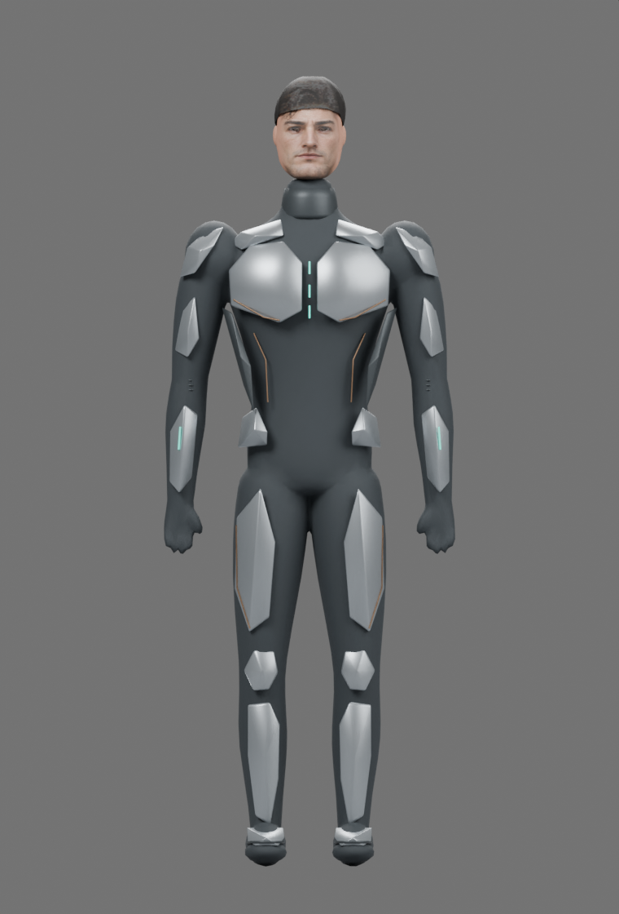
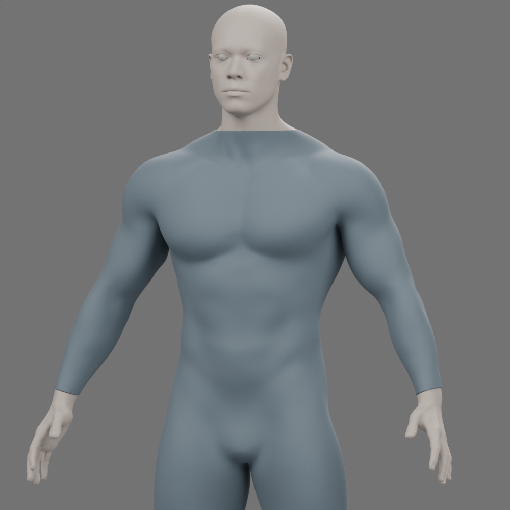
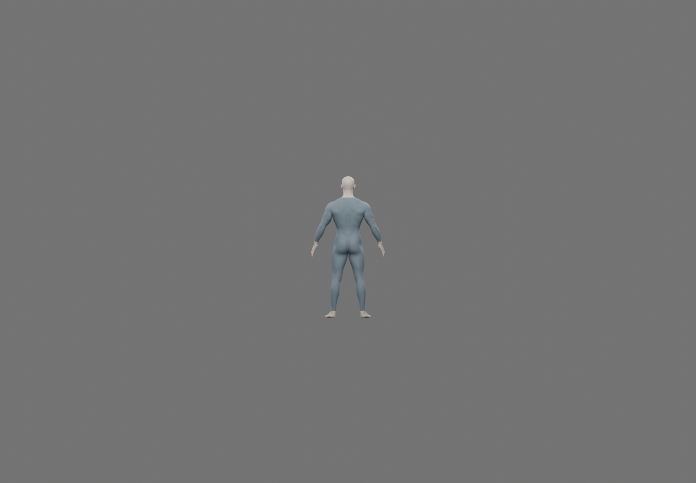

PHYSIQUE DIRECTION · ADULT PETER PARKER
An athletic explorer.
A developed upper body, tapered waist, and strong, lean limbs. Actual renders of the editable Blender mesh, wearing a plain fitted undersuit.
One body. Four views.
Same geometry, camera scale, and neutral studio lighting. Select an image to inspect it.
{kind=link}
{kind=link}
{kind=link}
{kind=link}
The change in silhouette.
The game model and anatomy proof share lighting and a normalized 1.85 m height. Materials differ.
{kind=link}

© Marvel / Insomniac Games / Sony Interactive Entertainment. Reference only. Different stance and perspective; no exact likeness score.
WHAT TO JUDGE
The body comes first.
Assess the shoulder-to-waist taper, chest depth, arm and leg balance, and whether the physique feels athletic from every angle.
The head and exposed hands and feet are neutral anatomical studies. Face identity, hairstyle, armor, boots, final textures, and rigging are later stages.
Current assessment: a materially stronger anatomical foundation than the playable model. The chest and thighs still read fuller and softer than the reference's sharply defined suit silhouette. This is ready for physique review, not a finished character.

At gameplay scale.
Approximately 294 pixels tall in this 1440 × 1000 image. Offline studio render; not an in-game or phone capture.
